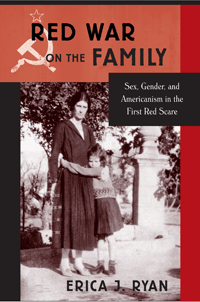

<body bgcolor="#FFFFFF" text="#000000" link="#0000FF" vlink="#CC0000" alink="#CC0000"><center><hr width="350" size="1" align="center" noshade>How the Red Scare contributed to sexual conformity in the United States<hr width="350" size="1" align="center" noshade><p><a href="https://cdcshoppingcart.uchicago.edu/Cart/ChicagoBook.aspx?ISBN=9781439908846&&PRESS=temple" target="_top">Buy this book!</a> | <a href="https://cdcshoppingcart.uchicago.edu/Cart/Cart.aspx?PRESS=temple" target="_top">View Cart</a> | <a href="https://cdcshoppingcart.uchicago.edu/Cart/Cart.aspx?PRESS=temple" target="_top">Check Out</a></p><p></p></center><!--none//--><h1>Red War on the Family</h1>
<H2>Sex, Gender, and Americanism in the First Red Scare</H2>
<h3>Erica J. Ryan</h3>
<P>cloth 1-4399-0884-2 $69.50, Nov 14, <FONT COLOR=#990033>Available</FONT>
<br>paper 1-4399-0885-0 $29.95, Aug 16, <FONT COLOR=#990033>Available</FONT>
<br>Electronic Book 1-4399-0886-9 $69.50 <FONT COLOR=#990033>Available</FONT>
<BR> 232 pp
6x9
</P><BLOCKQUOTE><I>"</I>Red War on the Family<I> is a compelling book. It argues that an ‘Americanism’ movement of the post–World War I era fused anti-Bolshevik rhetoric with anxieties about gender and sexuality to call for a return to a traditional notion of a patriarchal family that could regulate sexuality—especially female sexuality—and restore social order. With its focus on fears about the family, women, youth, and sexuality, </I>Red War on the Family<I> offers fresh insights into what we might call the ‘long’ Red Scare and contributes to the growing literature that traces the contemporary right-wing conservative movement to the 1920s."</i><br>&#151<b>Lynn Dumenil</b>, Robert Glass Cleland Professor of History Emerita at Occidental College</I></BLOCKQUOTE>
<P>In the 1920s, cultural and political reactions to the Red Scare contributed to a marked shift in the way Americans thought about sexuality, womanhood, manhood, and family life. The Russian Revolution prompted anxious Americans who sensed a threat to social order to position heterosexuality, monogamy, and the family as bulwarks against radicalism.
<P>In her probing and engaging book, <I>Red War on the Family</I>, Erica Ryan traces the roots of sexual modernism and the history of antiradicalism and antifeminism. She illustrates how Americans responded to foreign and domestic threats and expressed nationalism by strengthening traditional gender and family roles—especially by imposing them on immigrant groups, workers, women, and young people.
<P>Ryan argues that the environment of political conformity in the 1920s was maintained in part through the quest for cultural and social conformity, exemplified by white, middle-class family life. <I>Red War on the Family</I> charts the ways Americanism both reinforced and was reinforced by these sexual and gender norms in the decades after World War I.
<BR>&nbsp;<h2>Excerpt</h2><P>Excerpt available at <a href="http://www.temple.edu/tempress">www.temple.edu/tempress</a></p>
<BR>&nbsp;<h2>Reviews</h2>
<p><i>"[A]rgues Ryan, the Red Scare provided a means of countering the rapid social changes taking place in the late 1910s and 1920s, which included feminism, changing sexual morals, and the rise of companionate marriage. The author has an accessible writing style and convincingly argues her point. The book's nuanced subject matter will enrich research collections and prove most useful to readers at the graduate or faculty level. Summing Up: Recommended."</i><br>&#151<b><i>CHOICE</i></b>
<p><i>"Ryan has produced a fine piece of history on a new aspect of rightwing activity in the 1920s. She documents thoroughly and effectively how significant cultural strategies were in the political struggles of that era. In so doing, Ryan has successfully pushed back in time from the 1970s to 1920s the origins of conservatives' deployment of sex and gender issues to mobilize for their cause through apocalyptic threats and aggressive moral policing."</i><br>&#151<b><i>The American Historical Review</i></b>
<p><i>"Ryan’s study portrays the conservatism of the 1920s as essential for understanding the interplay between gender norms and American capitalism. The chapters span a wide range of topics, but the book stands out for its textured analysis of modern heterosexuality’s roots in American conservative reaction to the gendered implications of the Russian Revolution..... Historians of sexuality will find affirmation in Ryan’s book of the salience of gender and heterosexual norms to American conservatism. But I also hope that historians of American conservatism and capitalism take note of her points about the formative role of sexuality in modern American culture and politics. The book challenges the periodization of key concepts in twentieth-century American history.... Ryan’s study...is essential reading for scholars interested in the constellation of ideas about capital, family, sexuality, and race that informed American conservatism."</i><br>&#151<b><i>Journal of the History of Sexuality</i></b>
<p><i>"Ryan argues for the centrality of ideas about sexuality and gender to the surge of American nationalism after World War I.... [I]n unearthing fresh evidence that 'anticommunists' successfully defended patriarchy as well as capitalism, Ryan makes a worthwhile contribution to the literature on gender and the Right."</i><br>&#151<b><i>Journal of American History</i></b>
<p><i>"[A] must-read.... With equal candor and original insights, Erica J. Ryan’s </i>Red War on the Family<i>.... offers unique contributions to the history of immigration, feminism and antifeminism, the family, gender and sexuality, the 1920s, and the origins of the New Right.... Ryan breaks new ground in the history of state surveillance of marriage, gender and sexuality in early twentieth-century America. With clear prose and capable analysis, [this] book will become essential reading in history courses on the Progressive Era and the First Red Scare, marriage and the family, women, gender and sexuality, and immigration law."</i><br>&#151<b><i>Reviews in American History</i></b>
<BR>&nbsp;<h2>Contents</h2><P>
<p>Acknowledgments
<br>
<br>Introduction
<br>1. Americanism versus Bolshevism: The Red Scare and the Framing of Postwar American Culture
<br>2. “The Age of Woman in Revolt”: Talking about Bolshevism by Talking about Women in Red Scare America, 1919–1923
<br>3. “Every Homeowner Is a Bulwark of Americanism and a Safeguard against Bolshevism”: Constructions of Social Order and Working-Class Masculinity in the Postwar Own-Your-Own-Home Movement
<br>4. Getting “Personal and Intimate”: The Americanization of Immigrant Family and Sexual Values
<br>5. “The Perils Ahead Are Moral, not Economic”: Modern Culture, Modern Marriage, and Americanism after 1924
<br>Conclusion
<br>
<br>Notes
<br>Index
</P><BR>&nbsp;<H2>About the Author(s)</H2>
<P><b>Erica J. Ryan</b> is Assistant Professor of History at Rider University.</P>
<BR><H2>Subject Categories</H2>
<p><A HREF="/tempress/history.html" TARGET="_top">History</a>
<BR><A HREF="/tempress/sexual.html" TARGET="_top">Sexuality Studies/Sexual Identity</a>
<BR><A HREF="/tempress/american.html" TARGET="_top">American Studies</a>
</p>
<p align="center"><a href="https://cdcshoppingcart.uchicago.edu/Cart/ChicagoBook.aspx?ISBN=9781439908846&&PRESS=temple" target="_top">Buy this book!</a> | <a href="https://cdcshoppingcart.uchicago.edu/Cart/Cart.aspx?PRESS=temple" target="_top">View Cart</a> | <a href="https://cdcshoppingcart.uchicago.edu/Cart/Cart.aspx?PRESS=temple" target="_top">Check Out</a></p><p><font face="Arial" size="1"><a href="copyright.html" onMouseOver="window.status='Web Copyright Policy';return true;" onMouseOut="window.status=''" title="Web Copyright Policy">&copy;</a> 2016 <a href="http://www.temple.edu" target="new" onMouseOver="window.status='Link to Temple University home page';return true;" onMouseOut="window.status=''" title="Link to Temple University home page">Temple University</a>. All Rights Reserved. http://www.temple.edu/tempress/titles/2208_reg.html</font></p>